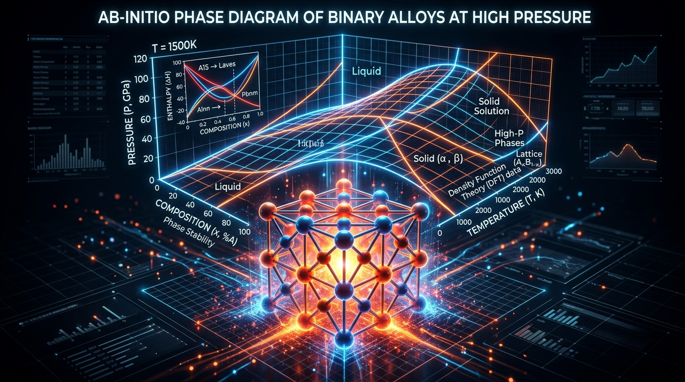
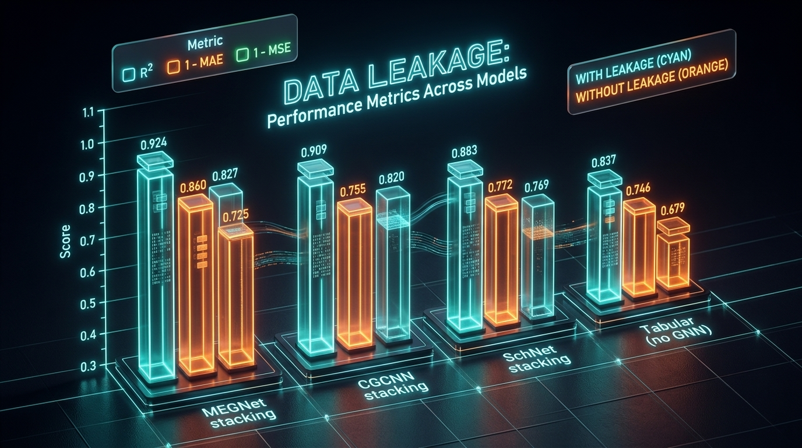
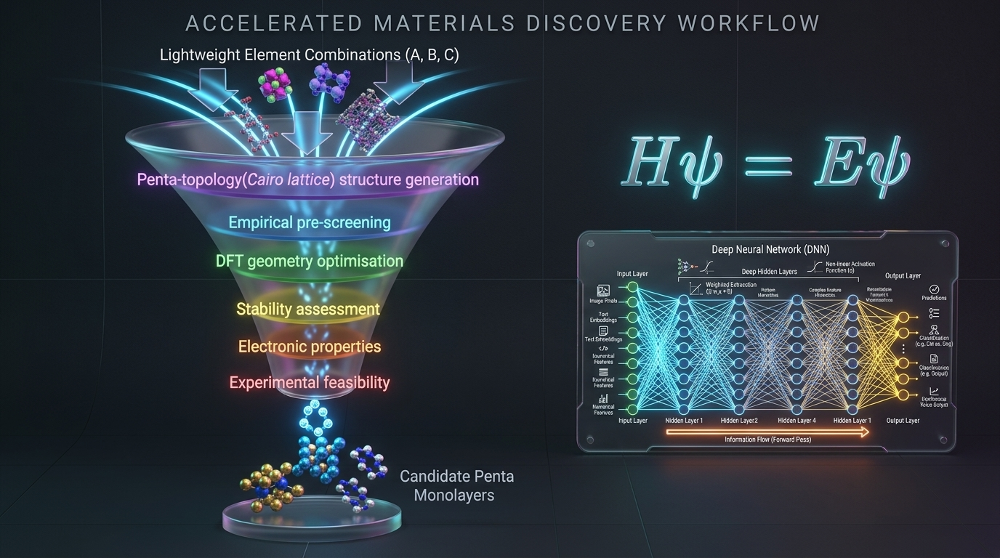
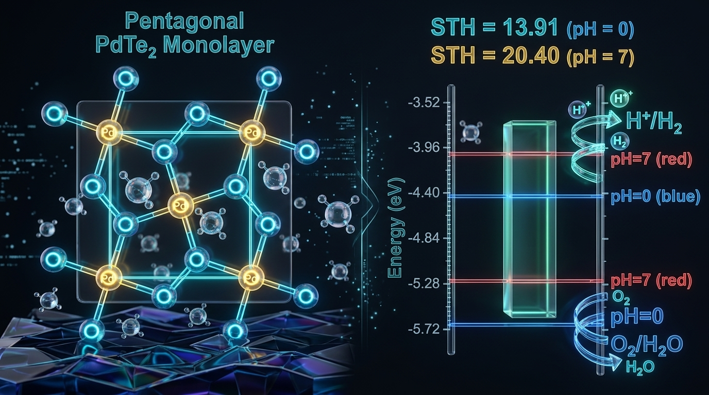
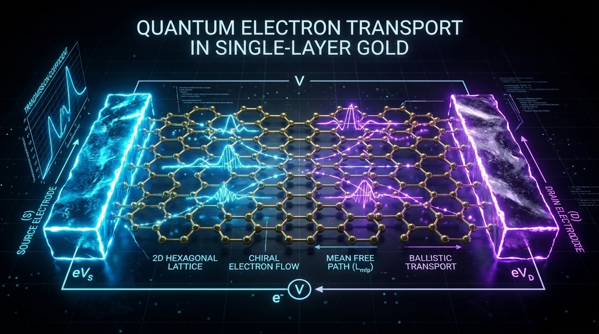
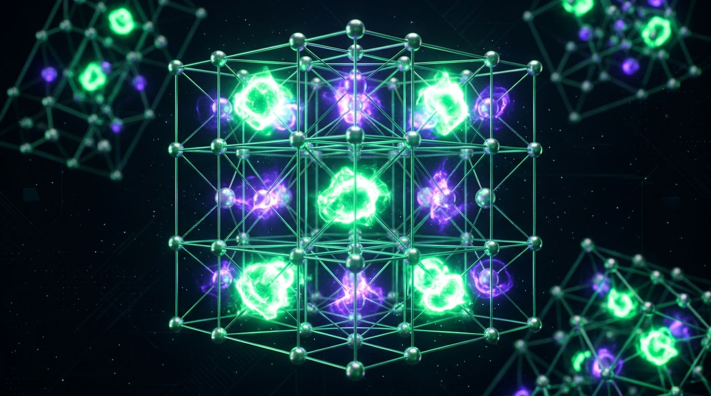

First-principles DFT, molecular dynamics, and machine learning applied to materials science.

Melting curve calculations up to extreme pressures are essential for predicting materials that sustain nuclear fusion reactors, aerospace, and military applications. We introduce controlled impurities to pristine metals to predict stable alloys and study their structural, electronic, and thermo-mechanical properties using DFT and AIMD.

An independent reproduction and audit of a recent hybrid graph-neural-network (CGCNN, MEGNet, SchNet) framework for band-gap prediction. We revealed that the originally reported high accuracies were artificially inflated due to severe train-test contamination and target-derived feature leakage. Controlled ablations isolate the genuine lift of GNNs over tabular baselines, correcting the literature record.

Accelerating materials discovery by combining high-throughput computations with machine learning and uncertainty sampling. This framework was successfully deployed to discover and predict the properties of novel 2D materials, including penta-SiCN and penta-PBN, and to uncover rare auxetic behaviours such as a negative Poisson's ratio.

Computational design of highly tunable 2D photocatalysts for clean energy applications. My foundational work investigated Cu-doped TiO₂ (112) surfaces for enhanced visible-light absorption, while my recent research demonstrates that strain-engineered pentagonal PdTe₂ (penta-PdTe₂) enables spontaneous, sustainable solar-driven water splitting.

We predict and characterise novel low-dimensional materials using DFT combined with non-equilibrium Green's function (NEGF) methods and ab-initio MD. Focus areas include quantum transport, nanomechanics, optoelectronics, and magnetism under varied conditions of doping, strain, and chemical passivation.

Electrides are ionic compounds where trapped electrons serve as anions. We use DFT and ab-initio MD to explore novel electrides from 0D to 3D dimensionality, studying their bulk and facet-dependent surface properties, doping effects, and slab/cleaving models to uncover functional behaviour.
See the full list of peer-reviewed publications arising from this work:
📰 View All 11 Publications